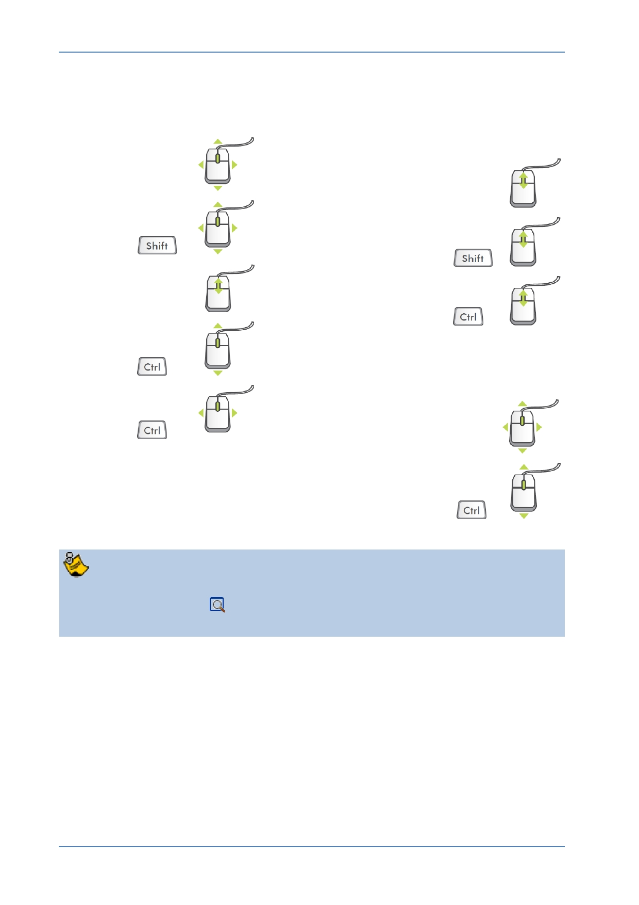

PTC Academic Program
Dynamic Viewing
The orientation of your model within the graphics area is easily controlled using the
mouse and the Graphics toolbar.
3D mode
2D and 3D mode
Hold down the key and roll the mouse.
Spin
Zoom
Pan
+
Fine Zoom +
Zoom
Course Zoom +
or
+
2D mode
Turn
+
Pan
Zoom
+
It is possible to ‘lose’ the model from the graphics area by spinning or panning
the model completely out of the display. If your model ever disappears from the
window, click Refit
from the Graphics toolbar or press CTRL + D .
© 2012 PTC
Creo Parametric 2.0 Primer
Page 23